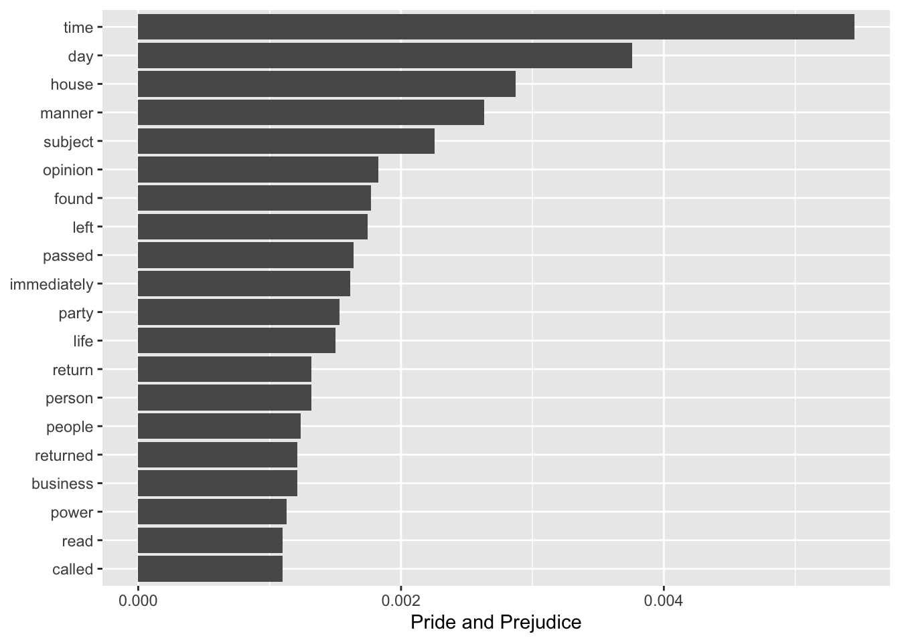
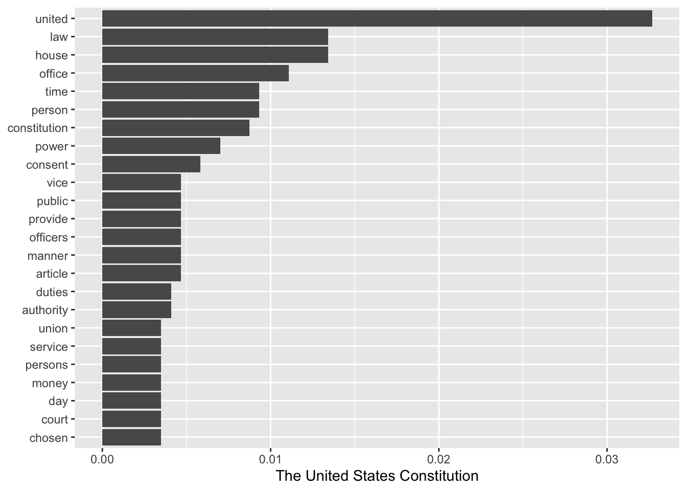
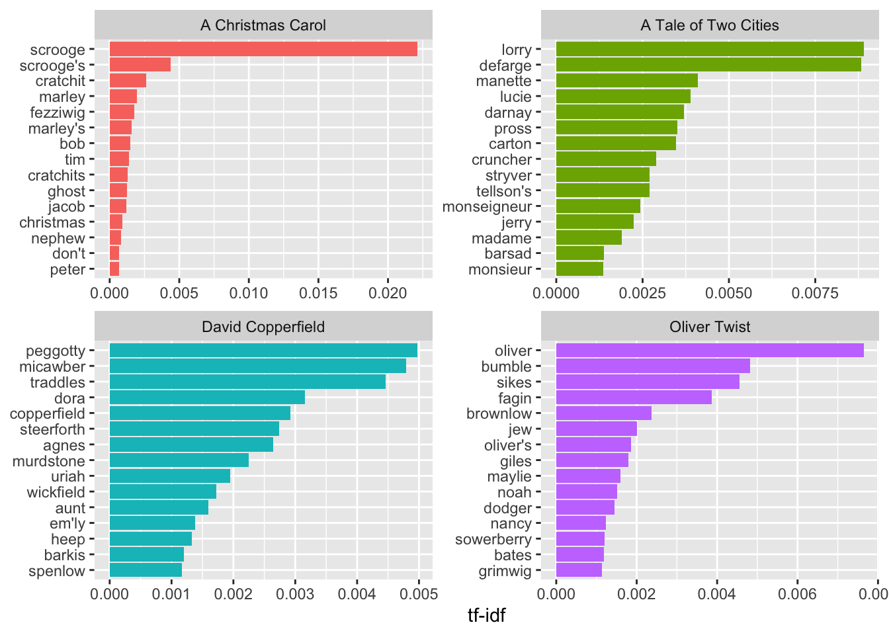
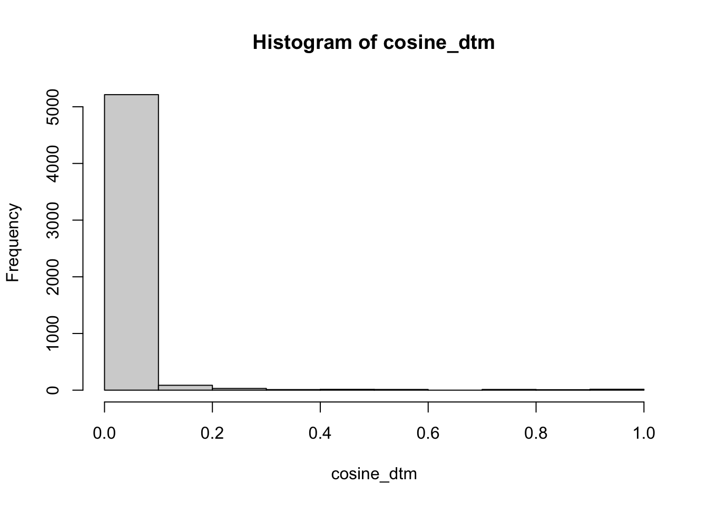
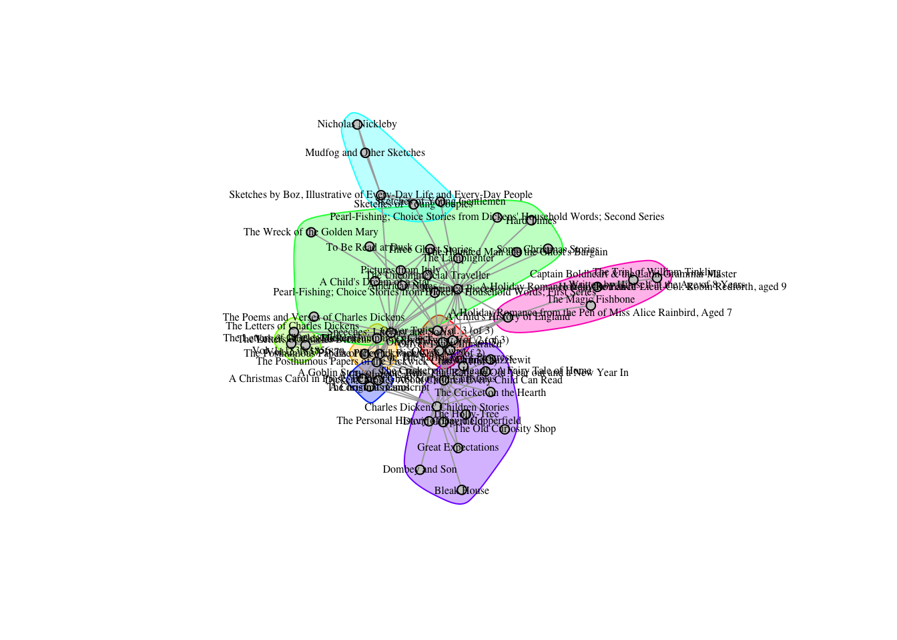
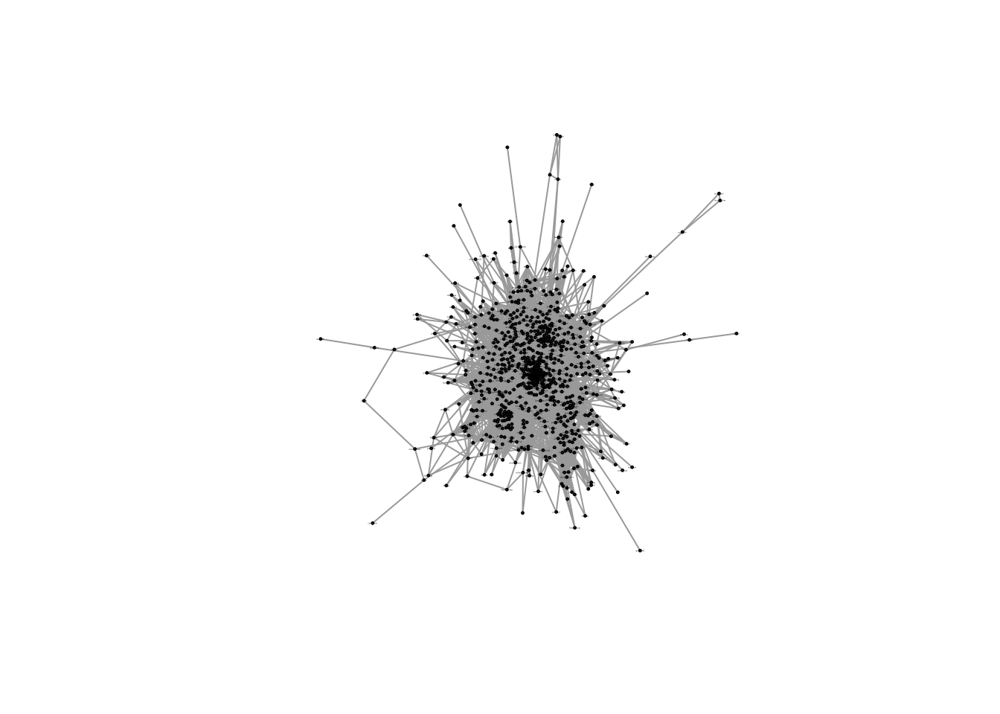

17 Culture and Networks
This week we discussed a number of studies which employ network analysis for the study of culture. Most, if not all, build off Breiger’s seminal 1972 paper on duality. Duality has been a central concept in Western philosophy since at least Spinoza; Breiger provides a network theoretic use for it. This use, as we saw in Fararo and Doreian (1984), can be extended beyond its original bipartite formulation to multipartite cultural structures, thereby capturing the inherent complexity in socio-cultural relations. At the core of these strategies then are matrices which link people to things - whether words or survey items - which can in turn be connected via tertiary relations to other things. Latour shows that by tracing the linkages, between people to things to other things perhaps back to people, we can begin to understand the possibilities for and constraints on social action.
In this tutorial, we cover some of the methods which have been used to study culture with networks. We begin with relational class analysis using the RCA package developed by Amir Goldberg and Sarah K. Stein. It implements the algorithm from Goldberg’s 2011 paper introducing RCA and links natively with igraph for visualization and downstream analyses. We will then move to semantic networks (Rule et al. 2015; Hoffman 2019) comparing and contrasting two different strategies for graphing texts as networks. The first focuses on a single text (or a related body of texts) and uses words as the unit of analysis to reveal the text’s internal structure. The second operates more akin to topic modeling with texts as the unit of analysis and ties representing semantic similarity. These representations, as we will see, are dual to each other.
17.1 RCA
Goldberg and Stein have implemented RCA in R and provided the package on R CRAN. I have put a subset of the GSS data on music taste that he and others have used for validating these methods.
The data link people to musical genres, identifying classes of respondents who construe musical genres in similar ways. So for example, I might think of music in a classed manner - such that highbrow musical genres like classical and jazz are opposed to lowbrow musical genres like hard rock and country. Alternatively, I might focus more on the progressiveness of genres - opposing traditional forms like folk and classical against newer genres like hip hop and rock.
Depending on which construal I subscribe to, classical music might be associated with very different sets of genres, independent of whether a person likes or dislikes classical music. We might also infer that a person’s like or dislike of classical music in the first case has very different underlying reasoning than in the second (for example, they are elitist vs. they have conservative tastes).
Let’s test these ideas by first loading in the GSS data
gss_music_taste <- readRDS("Data/gss_music_taste.RDS")Let’s take a quick peak at the data.
View(gss_music_taste)The columns correspond to musical genres, the rows correspond to people, and the values in the data correspond to how much a respondent rerpoted liking the genere on a scale of 1 to 5. We could imagine just treating this as a sort of weighted bipartite network and analyzing it as such, just like we learned in the affiliation data tutorial. Instead, we will load in the RCA package and use that to identify clusters of genres.
Let’s install and load in the RCA package.
install.packages("RCA")library(RCA)## Loading required package: igraph##
## Attaching package: 'igraph'## The following objects are masked from 'package:sna':
##
## betweenness, bonpow, closeness, components, degree, dyad.census,
## evcent, hierarchy, is.connected, neighborhood, triad.census## The following objects are masked from 'package:network':
##
## %c%, %s%, add.edges, add.vertices, delete.edges, delete.vertices,
## get.edge.attribute, get.edges, get.vertex.attribute, is.bipartite,
## is.directed, list.edge.attributes, list.vertex.attributes,
## set.edge.attribute, set.vertex.attribute## The following objects are masked from 'package:dplyr':
##
## as_data_frame, groups, union## The following objects are masked from 'package:purrr':
##
## compose, simplify## The following object is masked from 'package:tidyr':
##
## crossing## The following object is masked from 'package:tibble':
##
## as_data_frame## The following objects are masked from 'package:stats':
##
## decompose, spectrum## The following object is masked from 'package:base':
##
## union## Loading required package: gplots##
## Attaching package: 'gplots'## The following object is masked from 'package:stats':
##
## lowessIt’s probably worth taking a look at the documentation before we dive too deeply into the analyses.
?RCAThe main function is RCA() and it takes a matrix. The parameters max and min allow you to tell the function what the maximum and minimum valeus can be in the matrix, otherwise the algorithm will just use max() and min() to find them. This would be useful for example if you provided a survey with a 1-100 scale but no one rated any of the items 100. The last parameters govern the bootstrap strategy used to identify significant relationality values in the RCA algorithm.
Cool! Let’s run it on our music data. If we use the full data set, it will take a really long time (RCA is pretty slow). So we will first randomly sample 500 respondents.
set.seed(1)
rows_to_sample <- sample(1:nrow(gss_music_taste), 200)
gss_music_taste_500 <- gss_music_taste[rows_to_sample,]Now let’s use RCA to analyze this smaller data set. Even with the smaller data, this will probably take a couple of minutes.
rca_music_taste <- RCA(gss_music_taste_500)Did it run? We can take a look at the resulting RCA object.
summary(rca_music_taste)## Length Class Mode
## membership 200 -none- numeric
## modules 17 -none- list
## R 40000 -none- numericprint(rca_music_taste)## RCA found 17 relational classes. Sizes: 1 39 1 1 1 1 1 1 1 1 1 1 1 1 61 36 51How many groups are there? It looks like it found 5 classes, but only three are sizeable: classes 1, 4, and 5. We will focus on those in our analyses.
We could plot the results as a network to see how the different groups organize the cultural space of genres. The network plotting option however isn’t very good. It is better to use the heatmap option, which plots the correlation matrix of variables within each group.
17.1.1 Group 1
plot(rca_music_taste, module = 1, heatmap = T)17.1.2 Group 4:
plot(rca_music_taste, module = 4, heatmap = T)17.1.3 Group 5:
plot(rca_music_taste, module = 5, heatmap = T)What do the results show?
The membership vector will tell us which group each person belongs to. We can use this information in later analyses to analyze predictors of class membership etc. For example, we might want to know if members of one class or another are more likely to adhere to a particular way of viewing music.
head(rca_music_taste$membership)## [1] 1 2 15 2 15 1517.2 Semantic Network Analysis
In this section, we will analyze books from Project Gutenberg, an online library of more than 60,000 public domain books, using semantic network analysis.Let’s take a look at the API for Project Gutenberg. R has a package, gutenbergr for Project Gutenberg, which we can use to download and analyze many famous books.
First, we use install.packages() to install the gutenbergr package.
install.packages("gutenbergr")Once it is installed, we can use library() to load it in.
library(gutenbergr)The package comes with the metadata of each of the texts in the Project Gutenberg library preloaded in. You can use the View() function to look at all of the data.
View(gutenberg_metadata)In many analyses, you may want to filter just for English works, avoid duplicates, and include only books that have text that can be downloaded. The gutenberg_works() function does this pre-filtering for you and you can even use it to select a specific author.
dickens_books <- gutenberg_works(author == "Dickens, Charles")
austen_books <- gutenberg_works(author == "Austen, Jane")
conrad_books <- gutenberg_works(author == "Conrad, Joseph")We can use the gutenberg_download() function to download a text of interest. We have to pass to it the id of the book we want to download. Let’s download one of my favorites - Dumas’ Count of Monte Cristo!
First we search for the title inside of the metadata using grepl. grepl returns TRUE where it can find a given string inside of a vector, and FALSE otherwise.
monte_cristo <- gutenberg_works(grepl("The Count of Monte Cristo", title))Now let’s grab its id and use the gutenberg_download() function to download it. This might take a little while…
monte_cristo_text <- gutenberg_download(monte_cristo$gutenberg_id, mirror = "http://gutenberg.readingroo.ms/")Now use View() to read the text. It is in the form of a data.frame, where the text column holds the lines of the book.
View(monte_cristo_text)We could have passed the gutenberg_download() function two ids, or more, to get more texts. Let’s download 2 random texts.
First, we randomly sample two book ids from the metadata. To make sure we all randomly sample the same texts, we can set a seed, which makes random samples reproducible.
set.seed(100)
books_w_text <- gutenberg_metadata$gutenberg_id[gutenberg_metadata$has_text]
sampled_texts <- sample(books_w_text, 2)
random_texts <- gutenberg_download(sampled_texts, meta_fields = "title", mirror = "http://gutenberg.readingroo.ms/")What books did we get?
unique(random_texts$title)## [1] "The Secret Power"
## [2] "The Apology of the Church of England"Marie Corelli’s The Secret Power and The Apology of the Church of England. Why did we do this again?
17.2.1 Counting Words
Now that we know how to download texts, we can analyze them! First it is worth installing tidytext, a package specifically useful for analyzing text data of this sort.
install.packages("tidytext")Load it into R. We’ll need the rest of the tidyverse too (specifically dplyr and stringr).
library(tidytext)
library(tidyverse)Let’s analyze two texts we are actually familiar with - how about the Constitution and Pride and Prejudice? I located their id in the metadata, 5 and 1342 respectively.
familiar_texts <- gutenberg_download(c(5, 1342), meta_fields = "title", mirror = "http://gutenberg.readingroo.ms/")One strategy for comparing texts is to compare the counts of the words used in them. The first step for counting words is tokenizing the texts - which means breaking sentences and paragraphs down into their respective words. We will then count how frequently each word occurs.
Tidy text has a useful function called unnest_tokens() which does just that.
tokenized_words <- unnest_tokens(familiar_texts, word, text)
head(tokenized_words)## # A tibble: 6 × 3
## gutenberg_id title word
## <int> <chr> <chr>
## 1 5 The United States Constitution these
## 2 5 The United States Constitution original
## 3 5 The United States Constitution project
## 4 5 The United States Constitution gutenberg
## 5 5 The United States Constitution etexts
## 6 5 The United States Constitution willNext, we need to remove common and therefore uninformative words in the texts - like but, and, about, he, she, etc. These are called stopwords and tidy already has some predefined stopwords for us to use. We can use the data() function to read them into our R.
data(stop_words)
head(stop_words)## # A tibble: 6 × 2
## word lexicon
## <chr> <chr>
## 1 a SMART
## 2 a's SMART
## 3 able SMART
## 4 about SMART
## 5 above SMART
## 6 according SMARTLet’s remove the stop words using the anti_join() function, remove numbers and punctuation from them with str_extract and mutate, and then count up how often each word appears in each of the books using count().
word_counts <- anti_join(tokenized_words, stop_words, by = "word")
word_counts <- mutate(word_counts, word = str_extract(word, "[a-z']+"))
word_counts <- count(word_counts, title, word, sort = TRUE)
head(word_counts)## # A tibble: 6 × 3
## title word n
## <chr> <chr> <int>
## 1 Pride and Prejudice elizabeth 597
## 2 Pride and Prejudice darcy 374
## 3 Pride and Prejudice bennet 294
## 4 Pride and Prejudice miss 283
## 5 Pride and Prejudice jane 264
## 6 Pride and Prejudice bingley 257Counts are useful when we look at just one book, but when our goal is to compare many texts, they may be biased if one of our texts is much longer than another, and therefore has higher counts across every word. A common solution to this problem is to normalize counts by the total number of words in each text. Here we group the data by title, divide each count by the sum of the counts of all the words in each title and save the result as the variable proportion, remove the count variable keeping the proportions instead, and finally dropping any row in the data which has a missing value with drop_na().
Have we used piping from dplyr before? It is a useful way to string together a bunch of function calls, in a clear and informative manner, without having to reassign them to a new object each time.
word_proportions <- word_counts %>%
group_by(title) %>%
mutate(proportion = n / sum(n)) %>%
select(-n) %>%
spread(title, proportion) %>%
drop_naCool, now that we have the frequency with which each word occurs in each text, let’s visualize their differences.
Let’s focus on Pride and Prejudice first. We use the top_n() function to select only the top 20 texts with respect to proportion. We reorder the dataset according to proportion. We then plot the results as a bar plot using geom_col(). To make the result go horizontally we also use coord_flip(), which flips the coordinates of the plot.
top_words_pandp <- word_proportions %>%
top_n(20, `Pride and Prejudice`) %>%
mutate(word = reorder(word, `Pride and Prejudice`))
ggplot(top_words_pandp, aes(word, `Pride and Prejudice`)) +
geom_col() +
xlab(NULL) +
coord_flip()
We do the same for The United States Constitution.
top_words_const <- word_proportions %>%
top_n(20, `The United States Constitution`) %>%
mutate(word = reorder(word, `The United States Constitution`))
ggplot(top_words_const, aes(word, `The United States Constitution`)) +
geom_col() +
xlab(NULL) +
coord_flip()
Awesome!
17.3 From counts to a document-to-term matrix
What if we had hundreds of books and wanted to not just evaluate their individual word counts, but wanted to compare with respect to their compositions? We can build up from the individual document counts to a matrix - what we will call a document-to-term matrix - to build our semantic networks.
We can compare all of Charles’ Dickens works to see how similar they are and to identify novels with similar compositions. First, download Dickens’ texts with gutenberg_download(), just like before.
dickens_texts <- gutenberg_download(dickens_books$gutenberg_id, meta_fields = "title", mirror = "http://gutenberg.readingroo.ms/")Next we tokenize them and count how often each word occurs in each text.
dickens_words <- dickens_texts %>%
unnest_tokens(word, text) %>%
count(title, word, sort = TRUE)Let’s evaluate the number of words in each text, add the result to the original data with left_join(), and finally, take a look at the resulting data.frame.
total_words <- dickens_words %>%
group_by(title) %>%
summarize(total = sum(n))
dickens_words <- left_join(dickens_words, total_words)## Joining, by = "title"head(dickens_words)## # A tibble: 6 × 4
## title word n total
## <chr> <chr> <int> <int>
## 1 The Pickwick Papers the 18347 305070
## 2 Sketches by Boz, Illustrative of Every-Day Life and Every-… the 17582 258897
## 3 Dombey and Son the 17065 359055
## 4 Little Dorrit the 15731 341737
## 5 Martin Chuzzlewit the 15290 340421
## 6 Nicholas Nickleby the 15003 326369Before running cosine on the data, it is common to convert the raw counts into tf-idfs. The idea with tf-idf is that we want to weight words in each text depending on how special or specific they are to a given text, emphasizing those words that are important to each text. Then, when we run cosine, we won’t accidentally treat two texts as similar if they just both use a bunch of common words. Instead, they will be seen as similar only if they share important words.
Tf-idf stands for term frequency - inverse document frequency values. It is calculated by multiplying how frequently a word occurs in each text (term frequency) by the inverse of how many of the documents in the sample it can be found (i.e. idf = 1/document frequency).
Tidy text has a convenient function, bind_tf_idf, for calculating it. We just have to tell it - the name of our word column, the column which identifies which texts we are referring to, and the word counts column.
dickens_words <- dickens_words %>%
bind_tf_idf(word, title, n)What do the results look like?
dickens_words %>%
select(-total) %>%
arrange(desc(tf_idf)) %>%
head()## # A tibble: 6 × 6
## title word n tf idf tf_idf
## <chr> <chr> <int> <dbl> <dbl> <dbl>
## 1 "Captain Boldheart & the Latin-Grammar Ma… boldhea… 51 0.0126 3.21 0.0405
## 2 "The Magic Fishbone\nA Holiday Romance fr… alicia 33 0.00838 3.21 0.0268
## 3 "Scenes and Characters from the Works of … chap 773 0.0384 0.666 0.0256
## 4 "Scenes and Characters from the Works of … illustr… 868 0.0431 0.566 0.0244
## 5 "A Christmas Carol" scrooge 327 0.0110 2.00 0.0221
## 6 "A Christmas Carol in Prose; Being a Ghos… scrooge 314 0.0109 2.00 0.0218Let’s plot the top fiften words, by tf-idf, for four Dickens classics
dickens_words %>%
filter(title %in% c("A Christmas Carol",
"Oliver Twist",
"A Tale of Two Cities",
"David Copperfield")) %>%
arrange(desc(tf_idf)) %>%
mutate(word = factor(word, levels = rev(unique(word)))) %>%
group_by(title) %>%
top_n(15) %>%
ungroup() %>%
ggplot(aes(word, tf_idf, fill = title)) +
geom_col(show.legend = FALSE) +
labs(x = NULL, y = "tf-idf") +
facet_wrap(~title, ncol = 2, scales = "free") +
coord_flip()## Selecting by tf_idf
Now to turn it into a matrix all we have to do is use the cast_sparse function, specify which variables should be on the rows and columns, and how we want to fill the matrix.
dickens_dtm <- cast_sparse(dickens_words, row = title, col = word, value = tf_idf)17.4 Producing a skip-gram matrix for semantic network analysis and embedding models
As is the case with embedding models, you may also want to model not just the set of words that each text has, but rather, the precise sequences of words that are employed in each text. Doing so should reveal not just composition, but how words relate to each other within and across texts; or put differently, the local context in which words appear.
To produce such models, we need a different kind of data from the raw co-occurence matrices we made use of before. We will use what is called a skip-gram model, which counts the number of times a given word appears near another word, with near-ness being defined as some kind of window, say, of 4 or 5 words. A skip-gram window of two, for example, would count the number of times word j appears within the two words immediately before or after word i.
Rather than building a skip-gram model ourselves, we can just use the CreateTcm() function from the textmineR package of last lesson to turn a text of interest into a skip-gram.
First, let’s install the textmineR package and load it in.
install.packages("textmineR")library(textmineR)## Loading required package: Matrix##
## Attaching package: 'Matrix'## The following objects are masked from 'package:tidyr':
##
## expand, pack, unpack##
## Attaching package: 'textmineR'## The following object is masked from 'package:Matrix':
##
## update## The following object is masked from 'package:stats':
##
## updateThe textmineR package has a super useful function - CreateTcm() - which produces a skip-gram matrix, just like we want. All we have to do is specify the texts we want to run the skip-gram model on, the size of the skip-gram window, and how many cpus we want to use on our computer. The problem is that gutenbergr doesn’t give us texts in a single string, so we will have to do some work to prepare the data. While we are doing this, we might as well clean the data too.
We can turn this data set into the classic tokenized tidytext data set like we were working on before with the unnest_tokens function.
tokens <- dickens_texts %>% unnest_tokens(word, text)Next we want to drop words which are less than three characters in length, and drop stop words. We can drop short words with filter combined with the nchar function, and anti_join to drop stopwords.
tokens <- tokens %>%
filter(!(nchar(word) < 3)) %>%
anti_join(stop_words)## Joining, by = "word"Next we drop empty words.
# filter out empty words
tokens <- tokens %>% filter(!(word==""))The next part is a bit complicated. The basic idea is that we want to paste the texts for each book together. The unite function is good for that, but it only works on a wide form data set. So we will first group by book, produce an index for the row number (that is, what position is a given word in each text), we will then spread the data, converting our long form data into wide form, setting the key argument (which defines the columns of the new data.frame) to equal the index we created, and the value argument to word. The result is that each book is now its own row in the data.frame, with the column i+2 identifying the ith word in a given book.
tokens <- tokens %>%
group_by(title) %>%
mutate(ind = row_number()) %>%
spread(key = ind, value = word)We’ll convert NAs to "" and use unite to paste all of the columns in the data.frame together. We specify -title and -gutenberg_id so that those columns are preserved and not pasted with the words of each book
# convert NAs to empty strings
# tokens[is.na(tokens)] <- ""
# put the data.frame back together
tokens <- unite(tokens, text, -title, -gutenberg_id, sep =" " )Great, now each book is its own row in the data and there is a column which includes all of its text. We can now use CreateTcm to create a skip_gram matrix. This might take a while.
skip_gram_dickens <- CreateTcm(doc_vec = tokens$text,
skipgram_window = 10,
verbose = FALSE,
cpus = 4)The result is a word-to-word matrix, where cells are weighted by how frequently two words appear in the same window.
17.5 Comparing texts with cosine
We can easily turn either of the above matrices into networks by graphing them directly with igraph ( bipartite or unipartite, respectively). It is better, however, to use cosine analysis first.
To do this, we treat each text or word’s distribution of words as a vector in multidimensional space (where the number of dimensions are the number of words in the data) and then use cosine similarity to take the angle of every pair of vectors. This is an intuitive measure of similarity - where values close to 1 signify that two vectors (i.e. the word distributions of two texts) are going in precisely the same direction, and values close to 0 signal that they are going in orthagonal directions (i.e. they are not similar at all).
Let’s try this with both of the matrices above. We will use the proxy package to calculate cosine similarity.
install.packages('proxy')library(proxy)##
## Attaching package: 'proxy'## The following object is masked from 'package:Matrix':
##
## as.matrix## The following objects are masked from 'package:stats':
##
## as.dist, dist## The following object is masked from 'package:base':
##
## as.matrixproxy has a useful function - simil() - which calculates similarity for you. All you have to do is specify your data and the method you want to use for measuring similarity. It has a lot of different methods, but we will use cosine.
One thing you might notice is that these matrices are huge! We will have trouble analyzing them in our computers. There are many different strategies for extracting meaningful and useful terms (something called term extraction in computer science). Here is one simple strategy: evaluating the log-likelihood of each term in the corpus and selecting those with the highest log likelihood value. We will limit our matrices to the top 1000 terms (though a larger number is generally better as we are essentially throwing out data here…)
log_likelihood_terms <- function(dtm){
b = colSums(dtm)
b = ifelse(b[] == 0, 1e-12, b[])
LLs = c()
for(i in 1:nrow(dtm)){
a = dtm[i,]
a = ifelse(a[] == 0, 1e-12, a[])
c = sum(a)
d = sum(b)
E1 = c*(a+b)/(c+d)
E2 = d*(a+b)/(c+d)
LL = 2*((a*log(a/E1))+(b*log(b/E2)))
LL = sum(LL)
LLs = c(LLs, LL)
length(LLs)/ nrow(dtm)
}
names(LLs) = rownames(dtm)
LLs = LLs[order(LLs, decreasing = T)]
return(LLs)
}
dickens_dtm <- as.matrix(dickens_dtm)
ll_terms = log_likelihood_terms(t(dickens_dtm))
ll_terms = ll_terms[order(ll_terms, decreasing = T)]
ll_terms = names(ll_terms[1:1000])Now, we will do a couple of things. We will limit the matrices to only those terms which we deemed important using log-likelihood. We will then calculate cosine for every pair of words using the simil function from proxy.
# For the document-to-term matrix
cosine_dtm <- simil(dickens_dtm[,ll_terms], method = "cosine")
cosine_dtm <- as.matrix(cosine_dtm)
# For the skip-gram matrix
sg_ll_words <- rownames(skip_gram_dickens) %in% ll_terms
smaller_dickens_sg <- skip_gram_dickens[sg_ll_words, sg_ll_words]
smaller_dickens_sg <- as.matrix(smaller_dickens_sg)
cosine_sg <- simil(smaller_dickens_sg, method = "cosine")
cosine_sg <- as.matrix(cosine_sg)We could take the cosine of our cosine matrix again and again, again to CONCOR. We could therefore use this repeated cosine strategy to blockmodel the data.
How do the new cosine matrices look? Notice that the dtm matrix became a book-to-book matrix. We could have first taken the transpose to produce a word-to-word matrix, but one with different values from the skip-gram cosine matrix.
For each matrix, we can look at a value to see how similar two words or books are. For example, king and queen appear in very similar contexts according to the skip-gram cosine matrix.
cosine_sg["queen", "king"]## [1] 0.81195This might remind you of word embeddings. Both rely on the skip-gram matrix underneath and so we should expect similarities. If, instead of taking cosine, you instead took the singular value decomposition of the skip-gram matrix, using the svd() function, you would essentially get word embeddings. Check out GloVe (https://nlp.stanford.edu/projects/glove/) from Stanford’s NLP group to learn more.
Let’s plot the results as networks. To do so, we need igraph.
library(igraph)We will filter the matrices so that it only contains values which are in the top 5% of the cosine distribution. For reference, here is the distribution for the document-to-term matrix.
hist(cosine_dtm)
We use indexing to filter the matrix. First, we identify values which are less than the 0.95 percentile of the distribution. Then we use that logical to index the matrix and set those values to zero. Finally, we set the diagonal to zero too. In many cases, it may behoove you to set an even more stringent cut-off.
low_values_dtm <- cosine_dtm < quantile(cosine_dtm, 0.95, na.rm = T)
cosine_dtm[low_values_dtm] <- 0
diag(cosine_dtm) <- 0
low_values_sg <- cosine_sg < quantile(cosine_sg, 0.95, na.rm = T)
cosine_sg[low_values_sg] <- 0
diag(cosine_sg) <- 0Now let’s use igraph to graph the resulting matrices as a network. We use graph.adjacency to graph the matrix, we set weighted = T, so that it takes into account the cosine values when doing so. We set the mode to undirected since the matrix is symmetrical.
cosine_net_dtm <- graph.adjacency(cosine_dtm, weighted = T, mode = "undirected")
cosine_net_sg <- graph.adjacency(cosine_sg, weighted = T, mode = "undirected")We drop nodes which are disconnected from the main graphs.
comps <- components(cosine_net_dtm)$membership
largest_component <- which.max(table(comps))
cosine_net_dtm <- delete.vertices(cosine_net_dtm, which(comps != largest_component))
comps_sg <- components(cosine_net_sg)$membership
largest_component_sg <- which.max(table(comps_sg))
cosine_net_sg <- delete.vertices(cosine_net_sg, which(comps_sg != largest_component_sg))And plot the result marking groups using the Louvain clustering algorithm!
17.5.0.1 DTM
plot(cosine_net_dtm,
vertex.size = 5,
mark.groups = cluster_louvain(cosine_net_dtm),
vertex.color = "grey80",
vertex.border.color = "grey60",
vertex.label.cex = 0.5,
vertex.label.color = "black")
17.5.0.2 SG
plot(cosine_net_sg,
vertex.size = 1,
vertex.color = "grey80",
vertex.border.color = "grey60",
vertex.label.cex = 0.1,
vertex.label.color = "black")
Of course, now it is just a network and you can graph and analyze it as one.
sort(degree(cosine_net_dtm), decreasing = T)[1:10]## Speeches: Literary and Social
## 27
## Reprinted Pieces
## 22
## Dickens' Stories About Children Every Child Can Read
## 19
## Charles Dickens' Children Stories
## 14
## American Notes
## 11
## Oliver Twist, Vol. 3 (of 3)
## 10
## Oliver Twist, Vol. 1 (of 3)
## 8
## A Child's History of England
## 7
## Oliver Twist
## 7
## Oliver Twist, Illustrated\nor, The Parish Boy's Progress
## 7sort(degree(cosine_net_sg), decreasing = T)[1:10]## dickens haredale maryon sidenote mistress dorrit pecksniff laura
## 198 192 189 182 179 178 175 172
## assistant nupkins
## 171 171